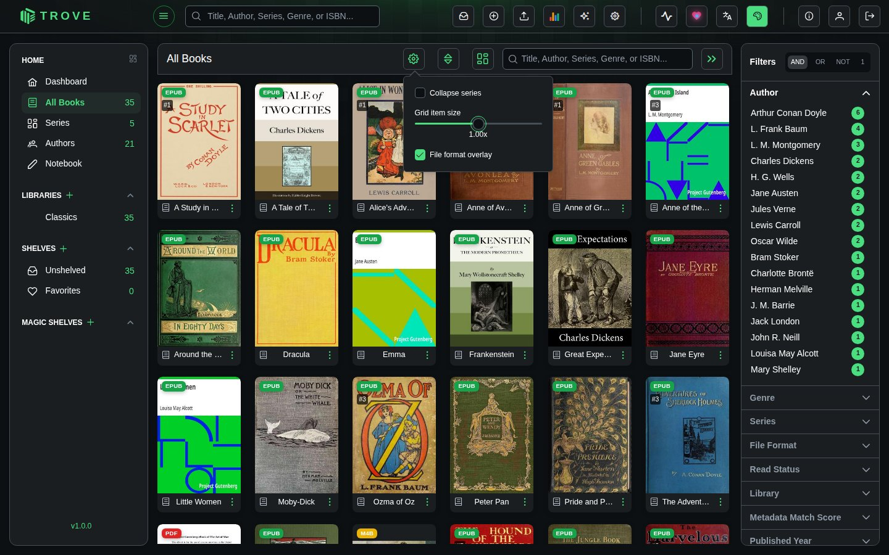
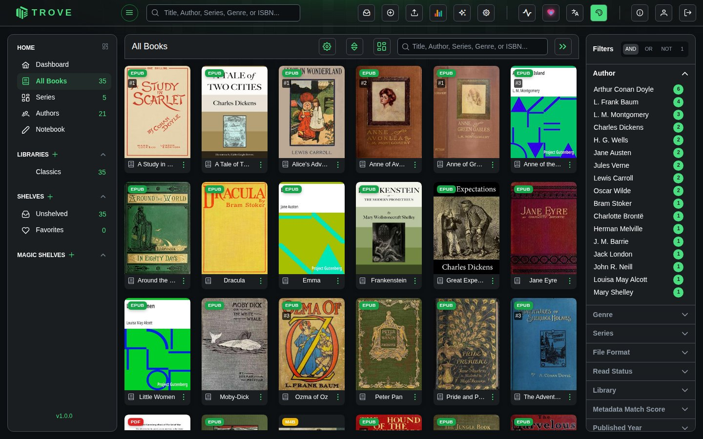
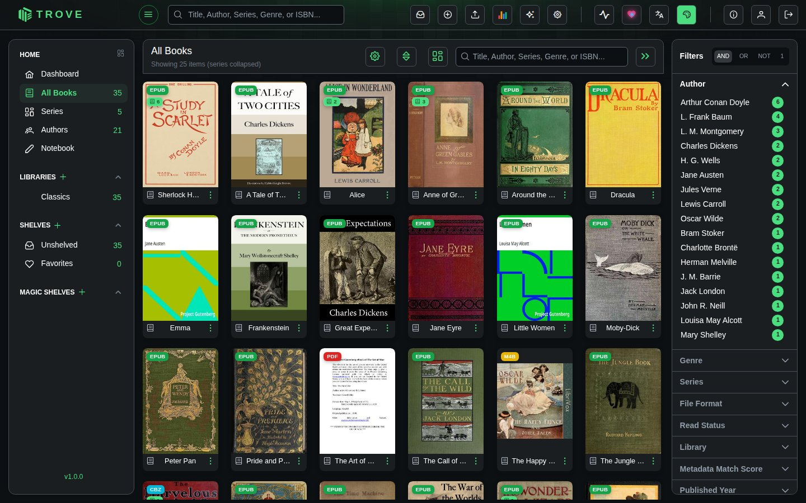
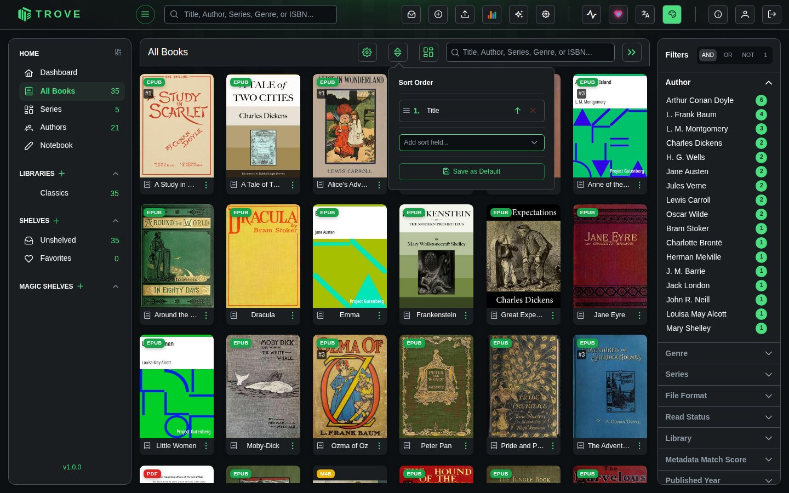
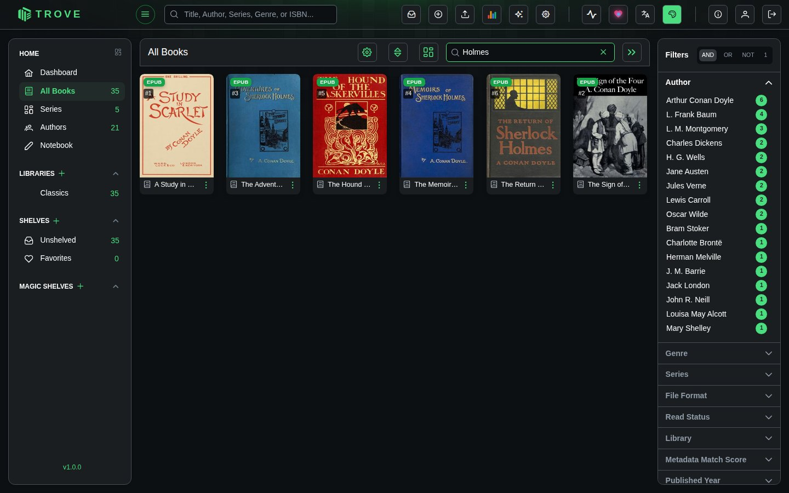
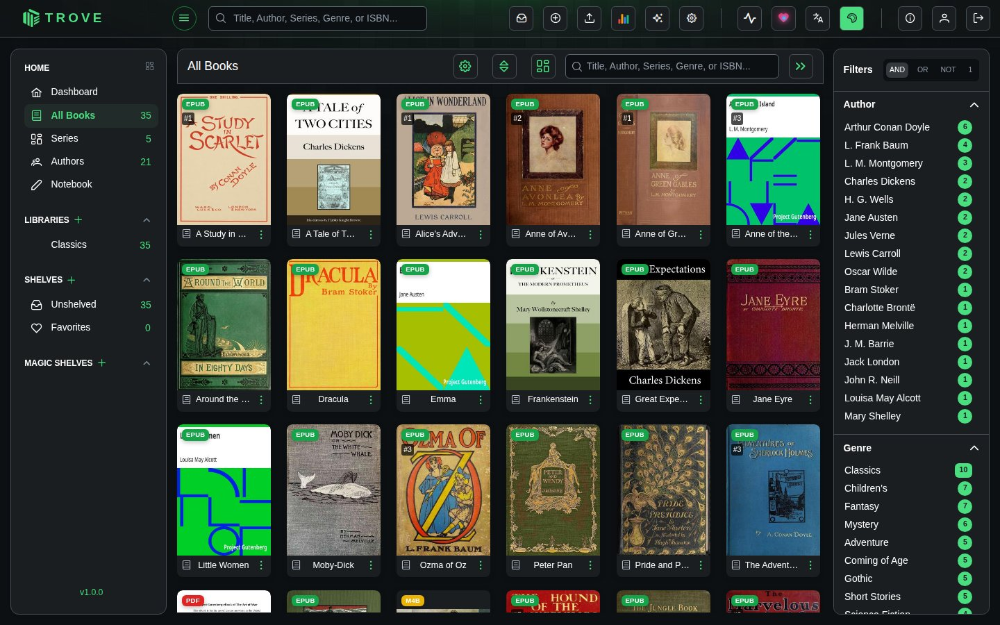

Grid view
The grid shows your books as covers. It's the same view for All Books, a library, a shelf or a magic shelf, with a toolbar across the top and filters down the right.

The toolbar
| Button | What it does |
|---|---|
| Cog | Display settings (below) |
| Up and down arrows | Sorting |
| Grid / table | Switches to the table view and back |
| Search box | Narrows the view as you type |
| » | Shows or hides the filter sidebar |
Display settings

| Setting | What it does |
|---|---|
| Collapse series | Shows each series as one card with a count, instead of every book |
| Grid item size | Makes the covers bigger or smaller |
| File format overlay | Shows or hides the EPUB, PDF, CBZ… badge on each cover |
Your choices are remembered for your account.
Collapsing series
With series expanded, every book has its own card:

Collapsed, a series takes one card with the number of books on it. Click it to open the series.

Sorting
The sort button opens a list of sort fields. Add more than one to break ties (for example series, then series number), drag them into order, and flip each between ascending and descending.

You can sort by title, file name or path, author (or author surname), series name and number, date added, last read, date finished, reading progress, read status, personal rating, publisher, published date, page count, file size, format, whether metadata is locked, ratings and review counts from Amazon, Goodreads, Hardcover and RanobeDB, narrator, or at random. Which fields appear in the list, and the default sort for each library or shelf, are set in View preferences.
Search
The search box matches titles, authors, series, genres and ISBNs as you type.

The search box in the top bar is different: it searches all your libraries and suggests books as you type.
Filters
The sidebar groups your books by author, genre, series, format, read status, rating, library, tag and more, with the number of books beside each value. Click a value to filter by it; click more to combine them.

The switch at the top decides how the values you pick combine:
| Mode | Shows books that | Example: Mystery and Gothic |
|---|---|---|
| AND | match every chosen value | Books that are both mysteries and gothic |
| OR | match any chosen value | Books that are either |
| NOT | match none of the chosen values | Everything except mysteries and gothic novels |
| 1 (single) | match the one value you last clicked | Clicking Gothic replaces Mystery |
A count beside a section's name shows how many of its values are chosen. Which sections appear, their order, and the mode you start in are set in View preferences. Filters are part of the page address, so you can bookmark a filtered view.
Selecting books
Hover over a cover and tick its box to select it; a bar appears at the bottom with actions for everything selected: assign or remove shelves, fetch or edit metadata, lock or unlock metadata, organise files, attach to another book, set read status or age and content ratings, and delete. What's there depends on your permissions.
The book menu
Each card's ⋮ menu has the actions for that book:
| Item | Contains |
|---|---|
| Assign Shelf | Choose which shelves the book is on |
| View Details | Opens the book page |
| Download | Downloads the book (or picks a format) |
| Delete | Deletes the book and its files |
| Email Book | Quick Send to your default recipient, or Custom Send (see Sending by email) |
| Metadata | Search Metadata, Auto Fetch, Custom Fetch, Regenerate Cover (File), Generate Custom Cover |
| More Actions | Organize File, Read Status, Reset Trove Progress, Reset KOReader Progress |